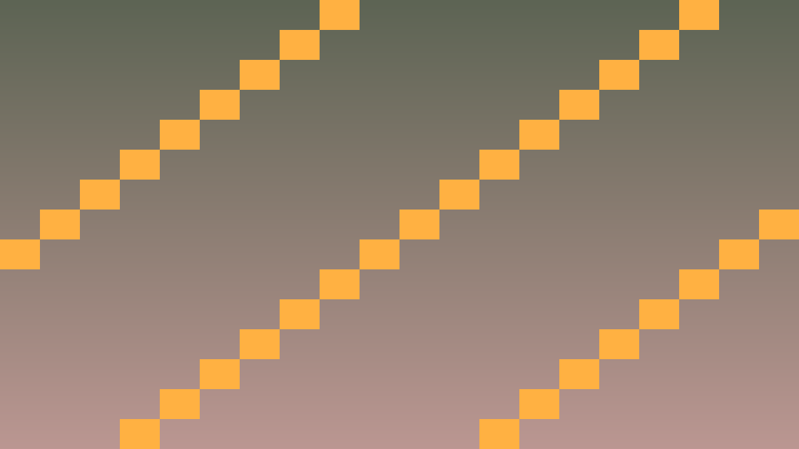
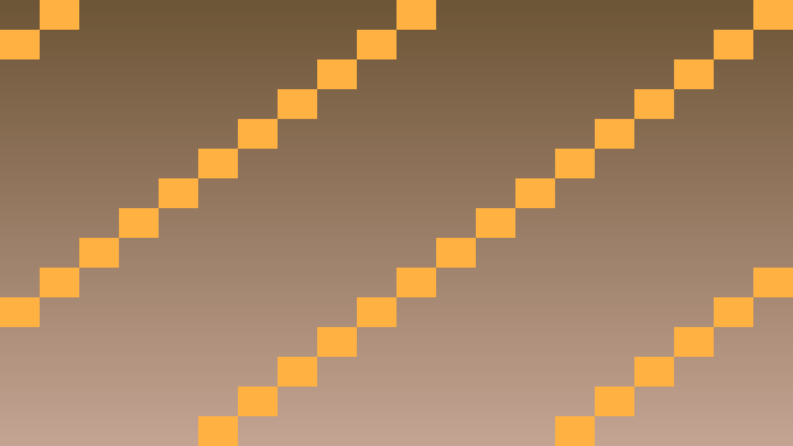
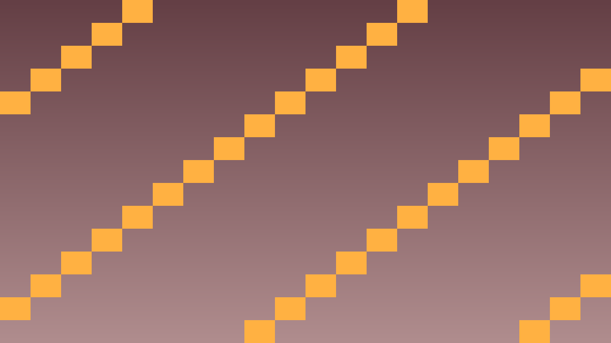

Tavs šīs stundas izaicinājums: Izveidot lietotāja saskarni ar Godot Control nodes — Button, Label, Container.
Pirms sāc: izmanto iepriekš apgūto un šīs lapas teorijas/koda piemērus. Ja vajadzīga jauna komanda vai rīks, vispirms atrodi tās paraugu teorijas sadaļā.
Godot UI sistēma izmanto Control nodes, kas atšķiras no Node2D — tām ir layout, anchors, theme.
| Node | Lietojums |
|---|---|
Label | Teksts (statisks) |
Button | Klikšķināmā poga |
LineEdit | Single-line input |
TextEdit | Multi-line input |
VBoxContainer | Vertikāls izvietojums |
HBoxContainer | Horizontāls izvietojums |
GridContainer | Grid layout |
PanelContainer | Background ar borderiem |
// Button signal
Button* btn = get_node<Button>("StartButton");
btn->connect("pressed", Callable(this, "on_start_pressed"));
void Menu::on_start_pressed() {
get_tree()->change_scene_to_file("res://game.tscn");
}Atceries: šajā stundā nepietiek tikai panākt redzamu efektu editorā. Paskaidro, kura C++ klase glabā stāvokli, kura metode to maina un kā Godot node struktūra šo kodu izmanto.
Pārbaudi: UI signāli, audio darbības, debug izvade un publicēšanas sagatave ir sasaistīta ar C++ spēles stāvokli.
#include <godot_cpp/variant/string.hpp>
using namespace godot;
struct PolishCheckpoint {
String lesson = "6.1 UI elementi un Control nodes";
bool uses_cpp = true;
bool connects_ui_signals = true;
bool routes_audio_events = true;
bool verifies_export_build = true;
};Atpazīsti šīs stundas galveno ideju un sasaisti to ar gala projektu Puzzle spēle.
.hpp, .cpp vai Godot scēnas failā, nevis uzreiz lielu funkciju.klases_punkti, zvana_taimeris, pazudusais_markieris vai kafijas_pauze; mazliet humora drīkst, bet kodam jāpaliek skaidram.Izmanto šīs stundas prasmi nelielā, strādājošā projekta daļā.
.hpp, .cpp vai Godot scēnas failā, izmantojot teorijas piemēru kā sākumpunktu.Pārbaudi risinājumu, salīdzini rezultātus un atrodi, ko uzlabot.
Pievieno nelielu radošu uzlabojumu ar klases dzīves piemēru, nepārsniedzot apgūto vielu.



#include <godot_cpp/classes/button.hpp>
#include <godot_cpp/classes/scene_tree.hpp>
void Menu::_ready() {
Button* start_btn = get_node<Button>("VBox/StartButton");
Button* settings_btn = get_node<Button>("VBox/SettingsButton");
Button* quit_btn = get_node<Button>("VBox/QuitButton");
start_btn->connect("pressed", Callable(this, "on_start"));
settings_btn->connect("pressed", Callable(this, "on_settings"));
quit_btn->connect("pressed", Callable(this, "on_quit"));
}
void Menu::on_start() {
get_tree()->change_scene_to_file("res://game.tscn");
}
void Menu::on_settings() {
get_tree()->change_scene_to_file("res://settings.tscn");
}
void Menu::on_quit() {
get_tree()->quit();
}